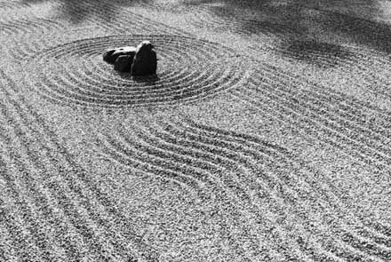

|
Desde quien habla sin saber,
mostrando lo que sabe sin hablarlo

Estas breves palabras se escriben para quien esté interesado en acercarse a eso que se oye como zen y que en donde pocas veces interesa el profundizar.
A veces es más fácil describir algo por lo que no es, encerrándolo en una solución acotada, completa y precisa. Si quisiéramos hacer esto con el zen descubriríamos una respuesta tan pequeña que abarcaría lo absoluto.
No se trata de vestirse de un modo, ni de decorar tu morada de una manera, ni de hablar japonés... de hecho no se trata de nada en absoluto.
Unas breves reseñas históricas. La tradición zen tiene su origen en China, en los siglos VII y VI aC, bajo la denominación Ch'an. Se piensa que su origen esencial anterior debiera encontrarse en la India.
Según parece, el término zen podría entenderse como meditación, sin embargo, en occidente esto nos lleva a la problemática de no entender realmente la base. Meditar en el zen no es meditar sobre algo, pensar en algo y crear conocimiento o nuevos razonamientos. Meditar se debería entender más como una contemplación del propio ser, sin interferir en la misma con pensamientos ni prejuicios.
No se trata de una religión, aunque actualmente sea muy conocido bajo el budismo-zen. No es tampoco una filosofía tal y como la entendemos en occidente. Se trata de un nuevo modo de ser bajo el no-ser.
Se puede entontrar en su camino todo un conjunto de prácticas para vaciar la mente de las antiguas ideas y condicionamientos. ¿El objetivo? Alcanzar una experiencia de liberación absoluta, superando el dualismo y viviendo bajo la plena consciencia del momento presente. En este punto no será dicho nada más.
Las técnicas más distinguidas y cercanas son los koans y por supuesto, la meditación conocida como zazen (meditación sentado). Sería demasiado pretencioso por mi parte querer examinar los detalles de los ejercicios meditativos, pues hay varios autores y maestros de los cuales he podido aprender, y deberían ser esos textos los que marquen esa referencia, pero haré notar que se trata de alcarzar una calma en sintonía con la respiración, que nos sirve de ayuda, eliminando el ruido de nuestros pensamientos. Se trata precisamente de lograr no hacer nada.
Los koans son pequeñas historias o frases que presentan cuestiones o problemas cuya solución no es en modo alguno racional. Se usan para que la mente entre en conflicto consigo misma y acabe apagándose en un parpadeo que nos conecta con la intuición de ese gran vacío. Son herramientas muy utilizadas en las escuelas zen.
Me gustaría recomendar un pequeño libro titulado Los sabios de la túnica de color ciruela, que nos presenta una serie de koans en los episodios de la vida de uno de esos sabios. Además de esta obra, que considero muy recomendable para quienes se inicien en la lectura de los koans, existe una obra de referencia llamada Mumonkan, La entrada sin puerta, todo un tratado de koans con comentarios de Mumon, su autor.
Lo más importante es acercarse a los koans sin prejuicio alguno, sin querer dar una respuesta o analizarlo, dejando que sea él el que resuene en nuestra mente.
Un maestro preguntó a sus discípulos:
-Nada digáis sobre la quincena anterior mas, ¿qué me decís de la próxima?
Ante el silencio de los demás, uno alzo la voz:
-Cada día es un buen día.
***
¿Cómo era tu rostro antes de que nacieran tus padres?
***
- Maestro, quisiera comprender el Tao.
- Entra.
- Maestro, no lo entiendo.
-Sal.
***
Aunque no lo parezca a simple vista, quien profundice en el zen podrá encontrar grandes similitudes con otras corrientes que buscan ese mismo trascender, como la mística cristiana o incluso el sufismo. No se trata de un camino establecido sino de un modo de mirar todos los caminos.
La experiencia trascendental se suelta de todo lo demás y a través de la nada abraza el infinito para volver a la nada. La risa, siempre la risa...
Como en tantas y tantas cosas de la vida que vivimos, los caminos se hacen andando y no pensando en el camino. Práctica, práctica y práctica... el resto sólo son palabras que hacen ruido en el aire y se van... las personas de buen corazon no son las que se limitan a habar de bondad.
¡Que vivas intensamente el momento presente!
José Manuel Pedrero (2010)
|
 RSS
RSS